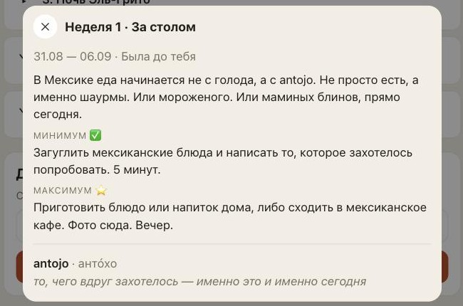
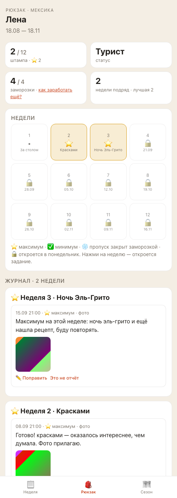

План на 18 сентября. Что появится у участниц и у тебя, чего не трогаем, как проверим. От тебя нужно «ок» или правки — до «ок» код не пишется.
Зачем это
Ты спросила: если человек идёт в своём темпе или пришёл в клуб позже, как ему дослать за прошлую неделю? Сейчас — никак. Лена пришла на второй неделе: первая у неё в «Рюкзаке» подписана «Была до тебя», задание она видит, а сделать и сохранить — некуда. Кому-то неделя понравилась уже после воскресенья — та же история.
Правило, которое мы записали 18 сентября: паспорт — про ритм («сделала вовремя»), журнал — про содержание («сделала вообще»). Они не спорят. Штамп и заморозка остаются как вышло, а текст и фото попадают в журнал и в книгу сезона. Это и делаем.
Что увидят люди: было → станет
Прошедшая неделя в «Сезоне»
было · Лена, неделя 1

Нажала на «1. За столом» — видно задание, слово, «Была до тебя». Сделать с этим ничего нельзя.
станет
неделя 1 · за столом
31.08 — 06.09 · Была до тебязадание и слово — как сейчас
Минимум ✅ · Максимум ⭐тексты задания без изменений
Добавить в журнал под кнопкой подпись: «Неделя прошла — штамп за неё уже не ставится, а в журнал и в книгу сезона попадёт»
Что было на этой неделе?та же форма, что «Сдать отчёт»: текст, «📷 Фото или видео», «Отправить»
После отправки«Записала в журнал недели 1. Штамп за неё уже не ставится» — и отчёт появляется тут же, под формой
Кнопка появляется только у прошедшей недели: у текущей форма обычная (со штампом), у будущей — ничего, после 18 ноября — тоже ничего.
То же самое — по нажатию на клетку прошедшей недели в «Рюкзаке»: открывается тот же лист.
Журнал и книга сезона
было · «Рюкзак» Лены

2 штампа из 12, недели 2 и 3. Клетка недели 1 — точка «Была до тебя». В журнале две недели: 3 и 2.
станет
рюкзак · те же цифры
2 / 12 штампа · Турист · 4 / 4 заморозкиничего не меняется: паспорт — про ритм
Клетка недели 1по-прежнему «Была до тебя», без штампа; нажатие открывает лист с «Добавить в журнал»
Журнал · 3 неделиновая глава «Неделя 1 · За столом · дослано позже» с текстом и фото, между главами 2 и «сообщениями вне недель»
PDF «Собрать»та же глава с пометкой «дослано позже»; на обложке штампов по-прежнему 2
В журнале видно, что сделано «вообще», в паспорте — что «вовремя». Пометка одна и та же в приложении и в книге.
У тебя в чате
было
📨 Отчёт за неделю 3 от Лена: Максимум на этой неделе: ночь эль-грито и ещё нашла рецепт, буду повторять.
Ответь на это сообщение — я передам ответ автору.
Так приходит обычный отчёт сейчас — копия в чат, текст из кода бота, номер недели в заголовке.
станет
📨 Лена дослала за неделю 1: За столом: нашла antojo — тако аль пастор с ананасом, попробовала дома.
Штамп не ставится. Ответь на это сообщение — я передам ответ автору.
Копия с пометкой «дослала за неделю 1». Ответить реплаем можно как на любой отчёт. В сводке недели у тебя и в черновике «Привала» этот отчёт не учитывается — итоги названы в воскресенье и не переписываются.
Данные в безопасности. Поздний отчёт — обычный отчёт, просто присланный после конца недели; ни новой таблицы, ни переделки старых записей. Отличается он одним: датой. Ничего не удаляется и не переписывается.
Принятые допущения
Дослать можно за любую прошедшую неделю сезона — и за ту, что была до прихода человека в клуб (как у Лены).
Поправить поздний отчёт или пометить «это не отчёт» можно до конца сезона — как у обычного, пока идёт его неделя.
В чат с ботом дослать по-прежнему нельзя: бот не знает, к какой неделе сообщение. Сообщение между неделями остаётся письмом тебе. В /help появится строка: «Дослать за прошедшую неделю — в приложении, «Сезон» → неделя».
Число поздних отчётов не ограничено, как и обычных.
Чего не трогаем
Штампы, заморозки, уровни, напоминания, сводка недели и «Привал» — ни правил, ни чисел.
Приём отчётов за текущую неделю — в чате и в приложении.
Архив страны — это другой формат для тех, кто идёт после сезона; он отдельной задачей.
Твою админку: в карточке человека поздний отчёт просто виден с той же пометкой.
Приёмка
По этому списку я и критики проверим, что сделано. Тот же список — в карточке задачи.
В «Сезоне» у прошедшей недели (не текущей, не будущей) есть «Добавить в журнал»; форма принимает текст и фото как «Сдать отчёт»; то же по клетке прошедшей недели в «Рюкзаке»
Поздний отчёт виден в журнале «Рюкзака» главой той недели с пометкой «дослано позже» и в PDF с той же пометкой
Штамп за неделю не появляется, число заморозок не меняется, уровень не меняется; сводка и «Привал» той недели у Милы не меняются
Миле в чат приходит копия с пометкой «дослала за неделю N»; в админке «Люди» → карточка человека отчёт виден с той же пометкой
После конца сезона кнопки нет; за текущую неделю форма по-прежнему обычная (штамп ставится); за будущую — ничего
Поздний отчёт можно поправить и пометить «это не отчёт» до конца сезона; повтор отправки не создаёт второй
В чат с ботом за прошедшую неделю по-прежнему нельзя: тексты бота и /help говорят, где дослать
Правила продукта (снять «не реализовано», дописать копию Миле), руководство, журнал изменений; все автоматические проверки зелёные
Сколько займёт
Вечер работы: форма и кнопка в приложении, приём отчёта за прошедшую неделю без штампа, пометка в журнале и PDF, копия тебе. Плюс день на проверку критиками и живой прогон. Сложных технических решений (таких, где нужен Дима) здесь нет: база не меняется.
Что дальше
Ответь здесь, в чате: «ок» — или что поправить (например, другую подпись вместо «дослано позже», или не присылать копию за недели до прихода человека). После «ок» пишу код, проверяю на стенде, показываю отчёт со скриншотами — и только потом «сливаем» и «выкатываем».